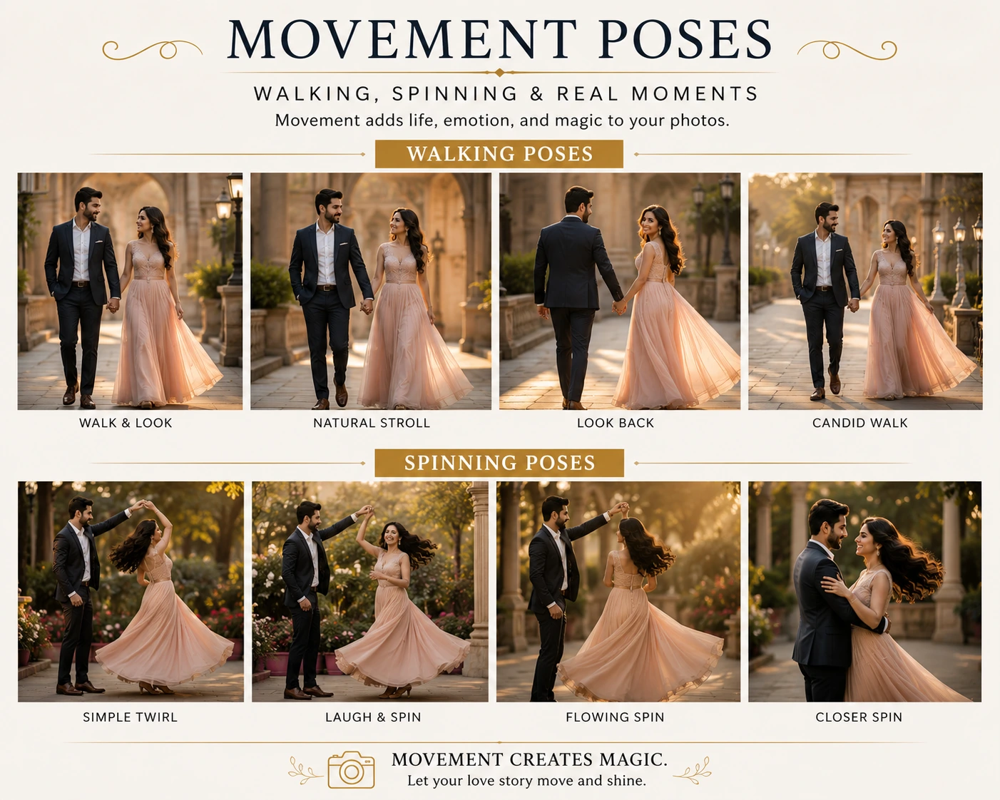
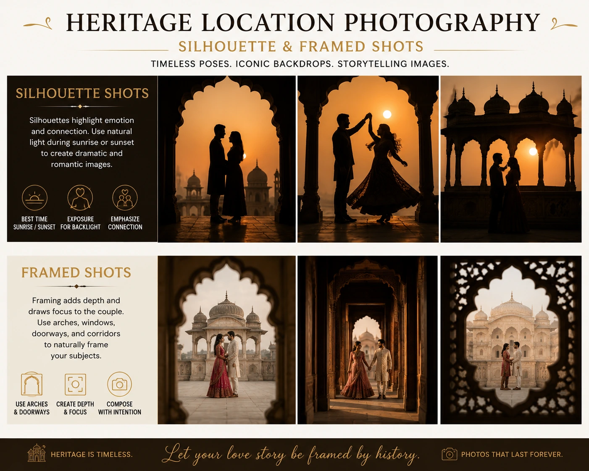

Trending Poses from Top Wedding Photographers: Making the Most of Your Engagement Photographers Session
Introduction
The engagement session is one of the most underestimated gifts a couple can give themselves before the wedding. Most couples book it because it comes with their photography package. But the couples who arrive at the big day wedding most prepared — most relaxed, most natural in front of the camera — are the ones who treated their engagement session as seriously as the wedding itself.
A great engagement session does three things at once: it gives you a stunning set of images, it helps you discover how you actually look and move together on camera, and it gives your day photographer the creative intelligence they need to make your marriage photography extraordinary. By the time the wedding day arrives, they already know your best angles, your natural chemistry, and the moments when you both forget the camera is there.
Why the Engagement Session Changes Everything
The engagement session is not just a photo opportunity — it is a creative partnership-building exercise between you and your photographer. Think about what your photographer needs to make your marriage photography exceptional: how you two interact when comfortable, which side of your face photographs best, whether you are more photogenic when laughing or still, and which environments bring out the best in both of you. None of this exists before you shoot together. All of it becomes available after a well-run session.
For couples planning a marriage video shoot alongside their photography coverage, the engagement session is doubly valuable. The videographer observes your dynamic, tests audio setups, and calibrates the visual language of the wedding film before the high-stakes day itself. The result is a wedding video with photos package that feels continuous — same visual treatment, same emotional register, same understanding of who you both are.
Category One: Movement-Based Poses
The most photogenic moments in any groom bride photoshoot are almost never static. Movement relaxes the face, creates natural interaction between partners, and produces the kind of unguarded expressions that make photos bride and groom look like themselves rather than like people having their photo taken.
The Walk
Walking hand in hand toward or away from the camera. Variations — mid-stride glances, looking over a shoulder — work in every environment and always produce natural expressions.
The Spin
One partner spins the other, creating movement in the fabric and a natural laugh. Particularly effective for lehengas, sarees, and dupattas that create beautiful movement in the air.
The Approach
One partner waits; the other walks toward them. The photographer captures the moment of reunion — the first glance, the first touch — some of the most emotionally resonant frames in any session.
Walking Away Together
The couple walks into the landscape together — small in frame, the environment large. Communicates intimacy and scale simultaneously. No direction needed — the couple simply walks and talks.

Category Two: Connection Poses
Connection poses are built around physical closeness and emotional presence. They produce the most emotionally charged images in a groom bride photoshoot — not because anything dramatic is happening, but because something real is. The goal is to create physical proximity that invites genuine emotional expression rather than performance.
- The Forehead Touch. Both partners close their eyes, foreheads touching. No instruction about expression — just the instruction to breathe and be present with each other. What the day photographer captures here is almost always the most unguarded and emotionally honest frame of the entire session.
- The Nose-to-Nose. Both partners face each other with noses almost touching. The proximity creates natural smiles or laughter without any instruction — the physical closeness is simultaneously funny and tender. One of the most consistently successful poses for self-conscious couples because it redirects attention to each other rather than the camera.
- The Whisper. One partner leans close to whisper something in the other's ear. The photographer captures the listener's reaction — the surprise, the laugh, the smile. The best direction: ask the whispering partner to say something genuinely funny or affectionate, producing an authentic response rather than a staged one.
- The Embrace from Behind. One partner wraps their arms around the other from behind and rests their chin on a shoulder. Both face the same direction. This pose communicates protectiveness and deep familiarity, and is one of the most frequently featured compositions in the portfolios of top wedding photographers across India.
- Sitting Together. The couple sits on steps, a low wall, or a garden bench. Sitting immediately changes posture and energy — the spine relaxes, the shoulders drop, the expressions soften. The variety of frames produced in a five-minute sitting sequence is remarkable.
Category Three: Environment and Location Poses
The best engagement sessions are not just about the couple — they are about the couple in a world. The location is not a backdrop; it is a collaborator. Here is how top wedding photographers use environment to create images that feel specific rather than generic:
- The Framed Shot. The couple positioned within a natural frame — a doorway, an archway, a corridor of trees, an opening in a wall. The frame draws the eye to the couple and creates depth. For heritage venues across Tamil Nadu, this is one of the most powerful compositional tools available to any day photographer.
- The Silhouette. Shot against a bright sky, a setting sun, or any strongly backlit environment, the couple is rendered as pure form — their proximity and physical relationship visible in pure abstraction. These frames also become some of the most beautiful sequences in any wedding video with photos package.
- The Detail Shot. Clasped hands, a ring against a sleeve, a hand on a shoulder, the edge of a veil against a face. These are the images that fill the supporting pages of a wedding album, work as social media content, and together tell the full visual story of a couple's connection. Every groom bride photoshoot should include a dedicated detail segment.
- The Candid Exploration. The photographer asks the couple to simply explore the location together — to show each other things they find interesting, to walk through a space as if the camera is not there. The photographer follows at a distance, shooting in burst mode. This produces the most genuinely candid frames of any session.

Category Four: Setting-Specific Poses for Indian Weddings
Indian weddings have a visual language of their own. The best marriage photography in India does not try to replicate Western editorial photography — it develops a visual language specifically suited to the cultural and aesthetic richness of the context.
Dupatta and Veil Work
- Dupatta lifted in movement by the wind
- Spread between two hands to frame the face
- Wrapped loosely around both partners
- Unique to Indian context — photographs extraordinarily
Mehndi Details
- Intricate pattern close-ups on hands and feet
- Bride's mehndi hands held by the groom
- Culturally specific and visually rich
- Ideal for photos bride detail work
Heritage Location Portraits
- Temples, mandapams, cultural venues
- Especially powerful in Madurai and Tamil Nadu
- Communicates cultural richness and historical depth
- Most requested from max photo studio near me searches
Every couple also has a me wedding moment — a specific look, laugh, or private gesture that only they share. The best photographers find this and build poses around it. This is what separates a session producing beautiful generic images from one producing images that are unmistakably about this specific couple. When a photographer asks "what do you two do when no one is looking?" — they are searching for this moment.
Making the Most of Your Session: Practical Strategies
Great poses are half the equation. Here is what actually produces extraordinary images from your engagement or the big day wedding shoot:
- Arrive relaxed, not rushed. The first twenty minutes of any session are always the stiffest. Build buffer time before the session so you are not arriving stressed. The best images almost always come in the second half, when everyone has settled in.
- Wear what makes you feel like yourselves. One formal look and one casual look within a single session captures the full range of your relationship. Casual outfits frequently produce the most natural and emotionally authentic images.
- Talk to each other, not to the camera. The camera is secondary. The photographer's job is to find the right moment within your conversation with each other. When couples focus on each other rather than performing for the lens, every expression becomes more natural — and every photo one shot counts.
- Trust the session to unfold. The best moments are never the ones that were planned — they emerge when the pressure to perform has relaxed. Trust your photographer, trust the process, and trust that the images you will love most are the ones you did not know were being taken.
Conclusion
Whether you are searching me wedding inspiration online or asking a day photographer for pose recommendations, the advice always converges on the same point: the engagement session is not a warmup. It is a creative investment that pays dividends on the wedding day itself and in the final images you will carry for the rest of your life.
The trending poses in this guide — movement, connection, environment, cultural specificity — consistently produce authentic, beautiful, meaningful images because they are built around real emotional dynamics rather than performance. Work with top wedding photographers who treat the groom bride photoshoot as a creative collaboration, who are as invested in your marriage photography as you are, and who arrive at the big day wedding already knowing you.
At The PhD Ads, we offer engagement photography sessions, marriage photography, and cinematic marriage video shoot packages across Madurai and Tamil Nadu — coordinated teams built to capture the full range of your wedding story, from the first engagement frame to the final wedding film.
Key Topics
Ready to Plan Your Engagement or Wedding Shoot?
At The PhD Ads, we specialise in engagement photography, marriage photography, and cinematic wedding video shoots across Madurai and Tamil Nadu — with a coordinated team that knows how to make every couple look and feel extraordinary in front of the camera.
Email: team@e2o.in